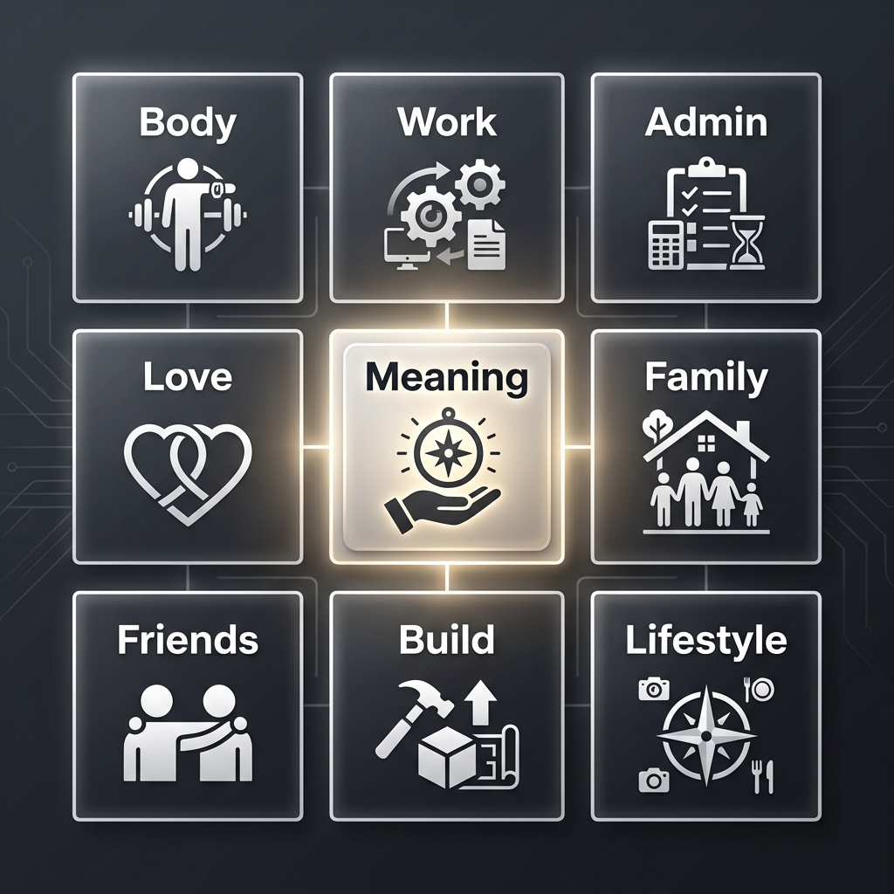

Life Balance 9 · Visual Map
Click a block to open a detailed category page. Center block is Sanctuary (meaning / reflection / inner life).

Body, Health, and Physical Vitality Work, Income, and Professional Stability Finance, Logistics, and Life Administration Love, Relationship, and Intimacy Meaning, Reflection, and Inner Life Family, Roots, and Personal History Friendship, Community, and Social World Creative and Technical Frontier Building Environment, Lifestyle Design, and Time Architecture